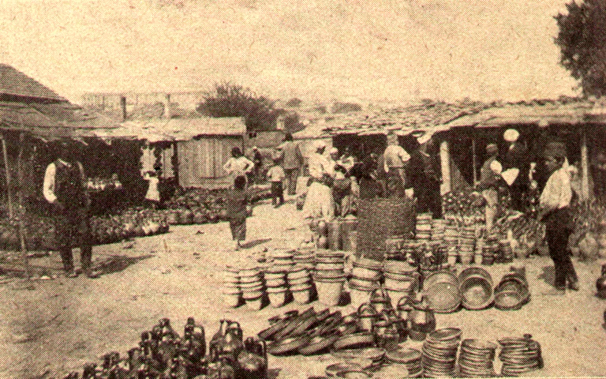
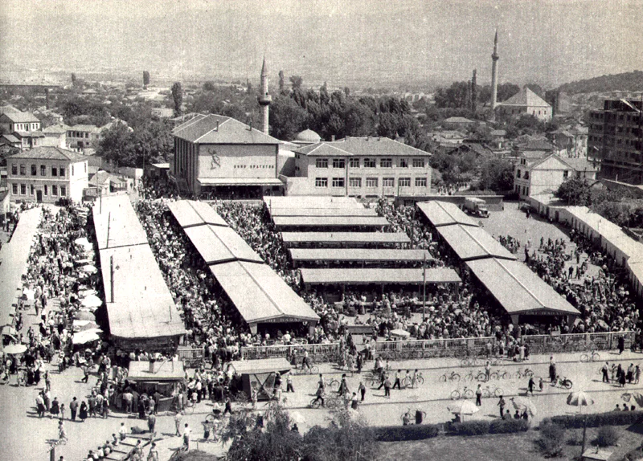

Üsküp 1916 - 1917 panorama 1
Balkan Savaşları'ndan belgeler
- Yıl
- 1916-1917
- Süre
- 00:11

Şehir kalesinin altında, Türk postanesinin karşısındaki Üsküp pazarında arabacılar. Arkada sağda Mustafa Paşa Camii ve postane. (19. yüzyıl)

Üsküp'te Hükümet (belediye) ve Türk postanesi önündeki alanda pazar - 1902. Arka planda solda kışla. (19. yüzyılın sonu)

1902'de Üsküp'te Hükümet (belediye) ve Türk postanesi önünde pazar günü. Arkada Mustafa Paşa Camii.

Şehir kalesinin altındaki Üsküp pazarı - 19. yüzyıl.

Şehir kalesinin altındaki Üsküp pazarı - 19. yüzyıl.

Şehir meydanında arabacılar - 19. yüzyıl.

Üsküp'te Hükümet (belediye) ve Türk postanesi önündeki alanda pazar - 1902. Arka planda kışla görülüyor.

Bit Pazarı, tarım ürünleri pazarı. Arka planda İshak Bey Camii ve türbe. (19. yüzyılın sonu, 20. yüzyılın başı)

Bit Pazarı, 19. yüzyılın sonu.

Eski çarşıda pazar - 19. yüzyılın sonu.

Bit Pazarı. Arka planda İshak Bey Camii ve türbe.
- 19. yüzyıl.

Bit Pazarı. Arka planda İshak Bey Camii ve türbe.
- 19. yüzyıl.

Bit Pazarı'nın bir bölümü - çömlek pazarı.
(20. yüzyılın başı)

Bit Pazarı'nda kentliler ve köylüler - pazar günlerinden bir an (20. yüzyılın başı)

Patates satıcısı - pazar günlerinden bir an
(1930 civarı)

Bit Pazarı - 1920'ler.

Bit Pazarı - 1950'ler.

Bit Pazarı - 1950'ler.

Balkan Savaşları'ndan belgeler
 Su kemeri4 kartpostal
Su kemeri4 kartpostal Kale30 kartpostal
Kale30 kartpostal Köprüler60 kartpostal
Köprüler60 kartpostal Rıhtım58 kartpostal
Rıhtım58 kartpostal Meydan46 kartpostal
Meydan46 kartpostal Binalar66 kartpostal
Binalar66 kartpostal Hristiyan kiliseleri19 kartpostal
Hristiyan kiliseleri19 kartpostal İslami yapılar33 kartpostal
İslami yapılar33 kartpostal Subaylar Evi29 kartpostal
Subaylar Evi29 kartpostal Tiyatro28 kartpostal
Tiyatro28 kartpostal Tren garı13 kartpostal
Tren garı13 kartpostal Okullar36 kartpostal
Okullar36 kartpostal Parklar12 kartpostal
Parklar12 kartpostal Pazarlar18 kartpostal
Pazarlar18 kartpostal Sokaklar38 kartpostal
Sokaklar38 kartpostal Panorama I60 kartpostal
Panorama I60 kartpostal Panorama II30 kartpostal
Panorama II30 kartpostal Kolajlar55 kartpostal
Kolajlar55 kartpostal Seller9 kartpostal
Seller9 kartpostal Deprem27 kartpostal
Deprem27 kartpostal Üsküp 200026 kartpostal
Üsküp 200026 kartpostal